Collection
하나의 나무에서
하나의 가구로
모든 가구는 원목 한 판에서 시작됩니다.
합판이나 베니어 없이, 나무 본연의 결을 살립니다.
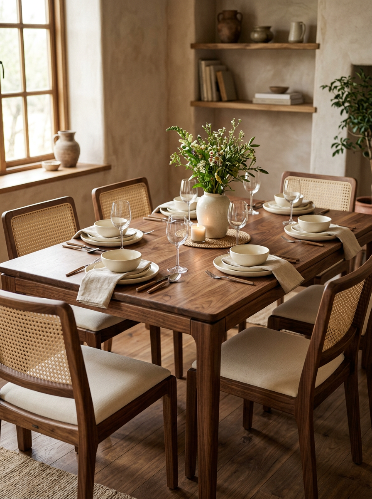
Dining Table
월넛 다이닝 테이블
6인 가족을 위한 넉넉한 크기. 솔리드 월넛의 깊은 결이
식탁 위 모든 순간을 더 따뜻하게 만듭니다.
₩2,800,000 – ₩4,500,000
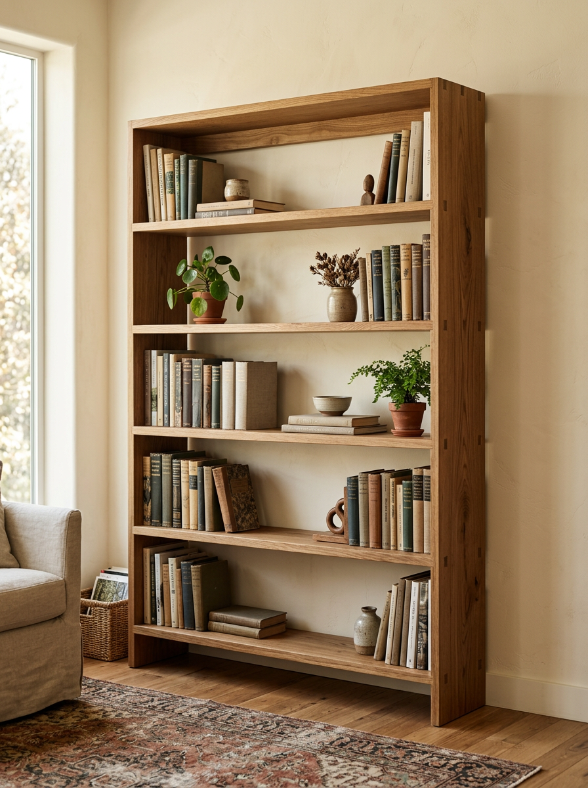
Bookshelf
화이트 오크 북셸프
비대칭 선반 구조가 만드는 리듬감.
책과 오브제가 자연스럽게 어우러집니다.
₩1,200,000
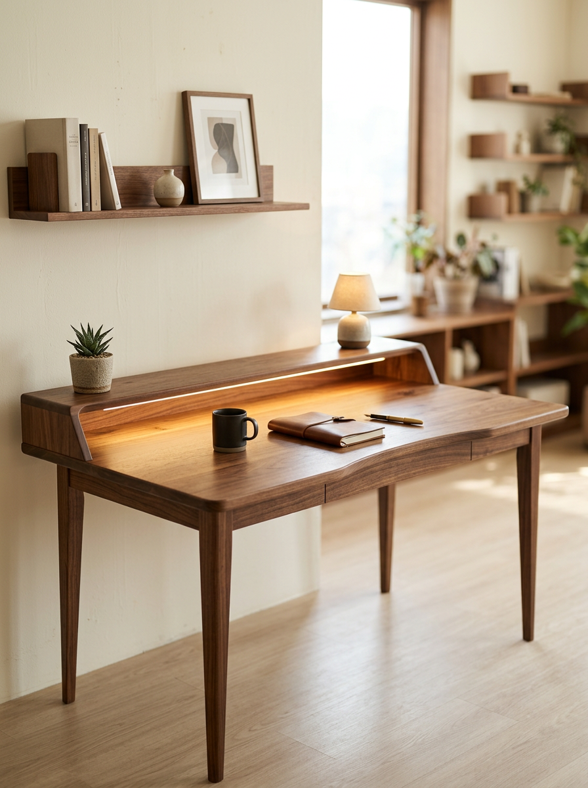
Writing Desk
월넛 라이팅 데스크
서랍 하나까지 무구재. 작업의 집중력을 높이는 미니멀한 선.
₩1,800,000
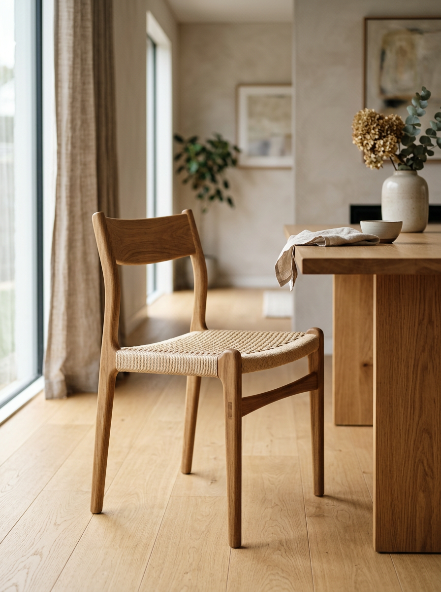
Dining Chair
오크 다이닝 체어
인체공학적 곡선과 원목의 만남.
오래 앉아도 편안합니다.
₩680,000
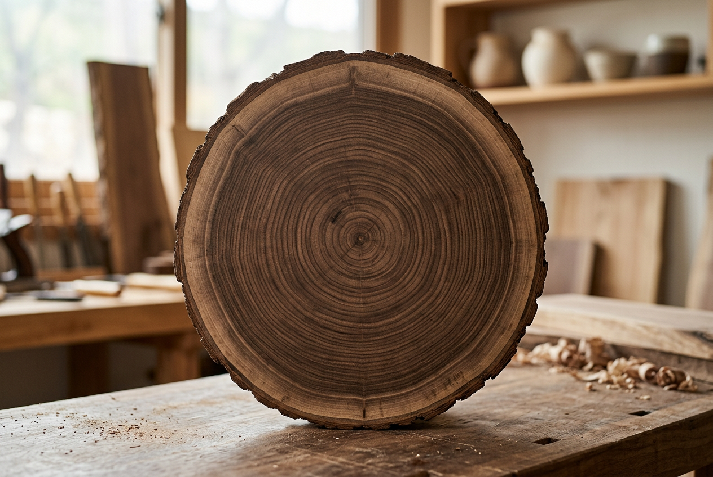
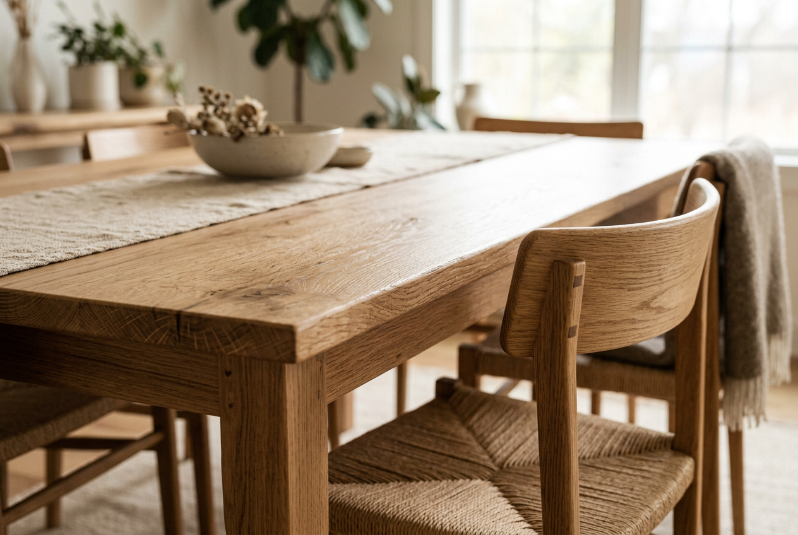
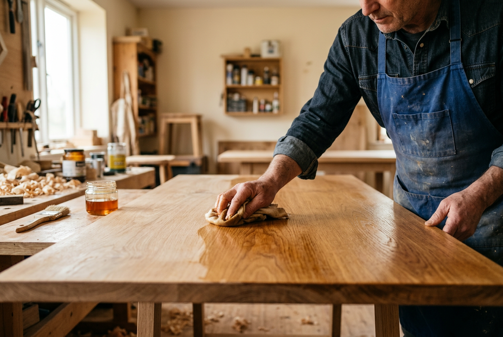
Material Philosophy
합판 없이,
나무 그대로
루미노 우드는 솔리드 월넛과 화이트 오크만을 사용합니다. 베니어나 MDF를 쓰지 않는 것은 원칙이 아니라 당연한 선택입니다.
- 솔리드 월넛 — 북미산 블랙 월넛, 자연 건조 18개월
- 화이트 오크 — 유럽산 오크, 밝고 균일한 결
- 천연 오일 마감 — 폴리우레탄 코팅 없이, 나무가 숨 쉬는 마감
Master Craftsman
나무를 읽는
20년의 손
강민호 장인은 스무 살에 처음 대패를 잡았습니다. 일본 도쿄의 목공방에서 5년, 이탈리아 피렌체에서 2년. 나무의 결을 읽고, 계절에 따라 달라지는 수축률을 이해하는 데 20년이라는 시간이 필요했습니다.
"좋은 가구는 사용할수록 아름다워집니다. 시간이 만드는 변화를 두려워하지 않는 가구, 그것이 제가 만드는 가구입니다."
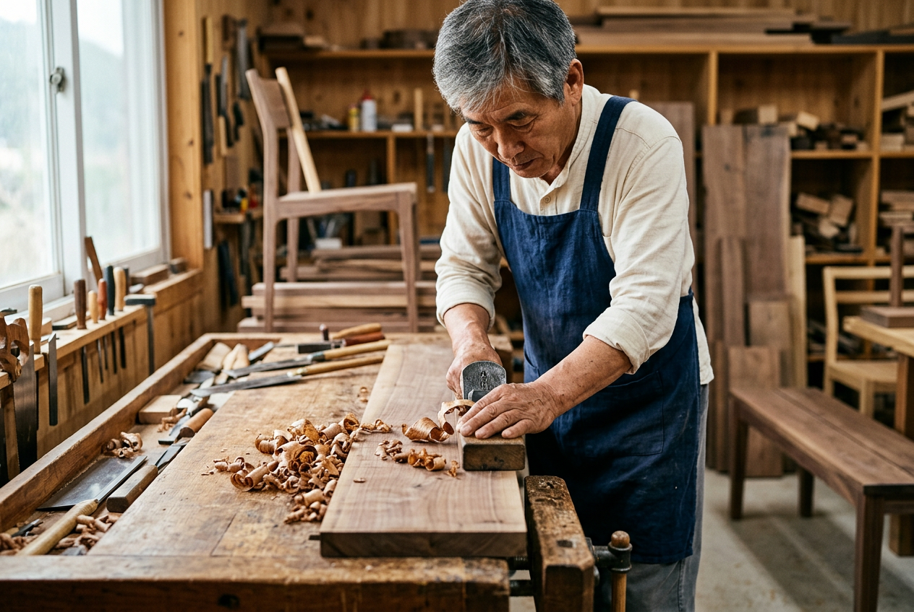
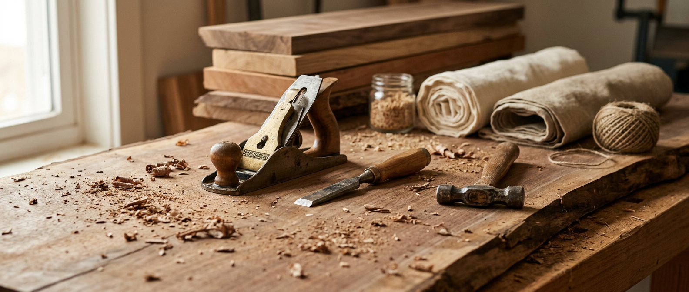
The Workshop
모든 가구는
이 공방에서 태어납니다
파주 헤이리 마을에 자리한 루미노 우드 공방. 나무를 고르는 것부터 마지막 오일 마감까지, 모든 과정이 한 공간에서 장인의 손으로 이루어집니다.
Custom Order Process
상담부터 설치까지
당신의 공간에 맞는 가구가 완성되기까지,
정성스러운 다섯 단계를 거칩니다.
Step 1
상담
공간의 용도와 원하시는 스타일, 예산을 함께 이야기합니다.
Step 2
목재 선별
월넛과 오크 중 적합한 수종을 선택하고, 원하는 결의 판재를 직접 골라보실 수 있습니다.
Step 3
맞춤 설계
공간 실측 후 사이즈와 디테일을 확정합니다. 3D 시안을 제공합니다.
Step 4
수공 제작 (4-6주)
장인이 직접 재단, 조립, 사포질, 오일 마감까지 한 점씩 완성합니다.
Step 5
배송 & 설치
전용 차량으로 안전하게 배송하고, 전문 팀이 직접 설치합니다.
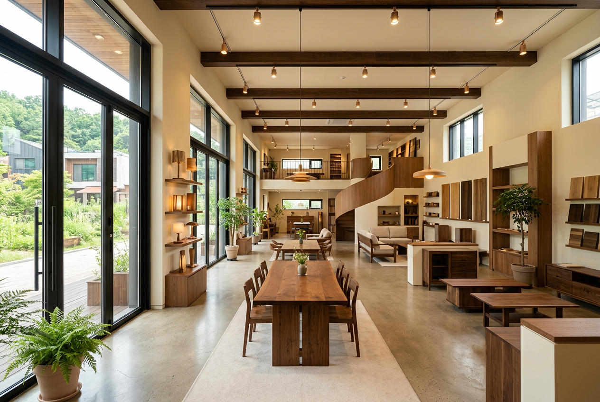
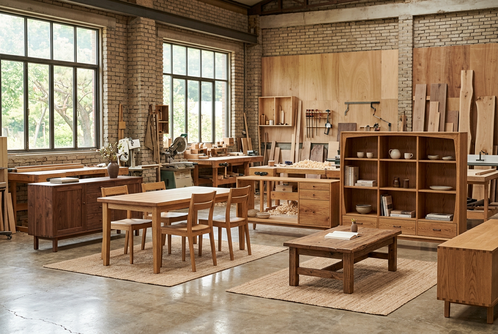
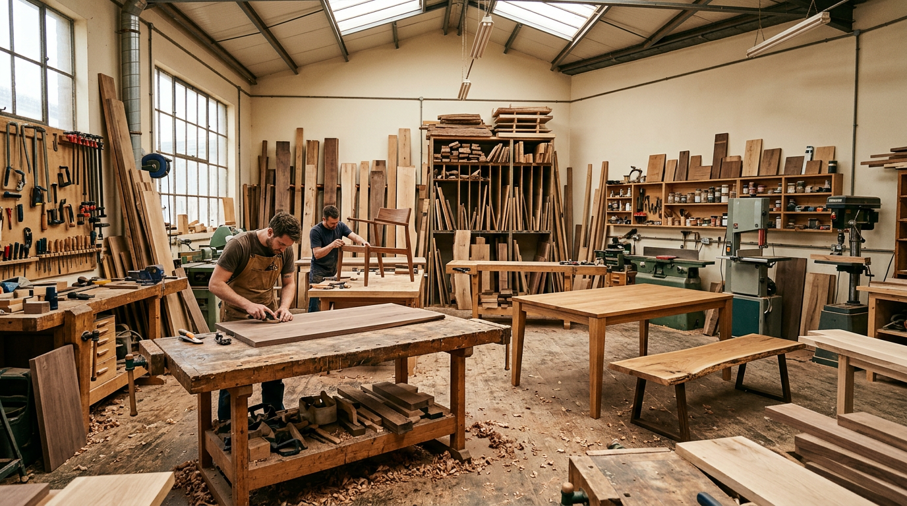
Showroom
직접 만지고,
앉아보세요
파주 헤이리 예술마을에 위치한 루미노 우드 쇼룸에서 모든 컬렉션을 직접 경험하실 수 있습니다. 나무의 질감, 의자의 앉음새, 테이블의 크기를 몸으로 느껴보세요.
경기도 파주시 탄현면 헤이리마을길 93-12
헤이리 예술마을 3구역
사전 예약제 운영
토·일 10:00 – 18:00 (평일 예약 시 방문 가능)
031-948-7720
카카오톡 채널: 루미노우드
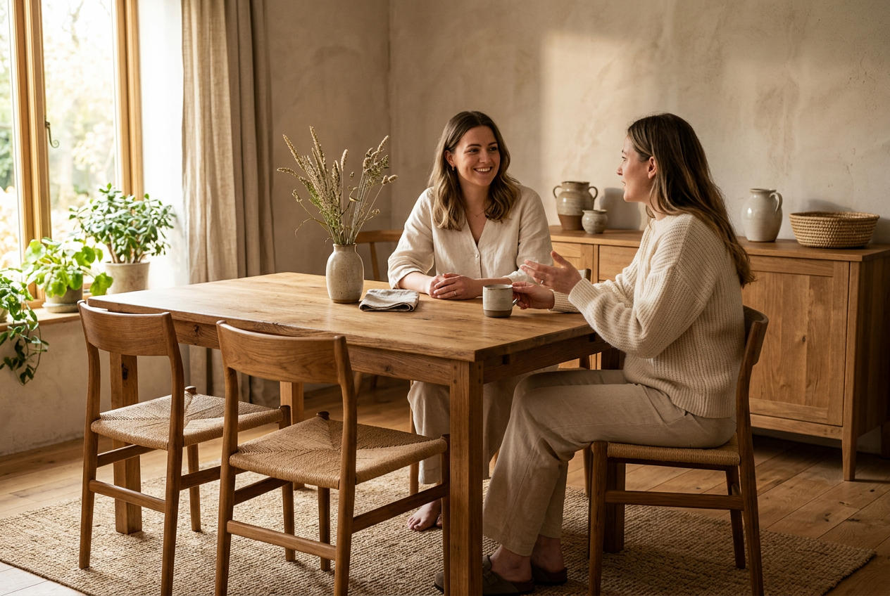
Testimonials
시간이 증명하는 가구
"3년 전 구입한 월넛 다이닝 테이블이 해가 갈수록 색이 깊어져요. 매일 가족과 함께하는 식탁이 이렇게 아름다울 수 있다니."
김지현 · 서울 성수동 · 다이닝 테이블
"서재 책장과 데스크를 맞춤 제작했습니다. 공간 치수에 딱 맞게 설계해주셔서 기성품에서는 불가능한 완성도를 얻었어요."
박준영 · 판교 · 북셸프 + 데스크 세트
"카페 테이블 8개를 의뢰했어요. 매장에 들어오는 손님마다 '이 테이블 어디서 샀어요?'라고 물어봅니다. 그게 답이죠."
이서윤 · 연남동 카페 운영 · 커스텀 카페 테이블
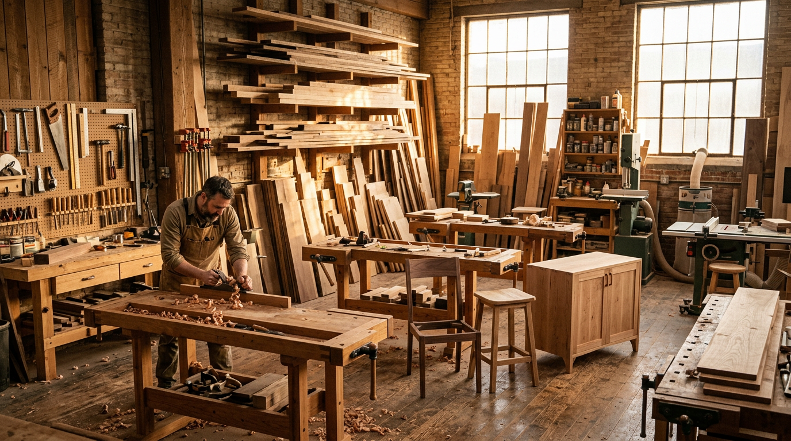